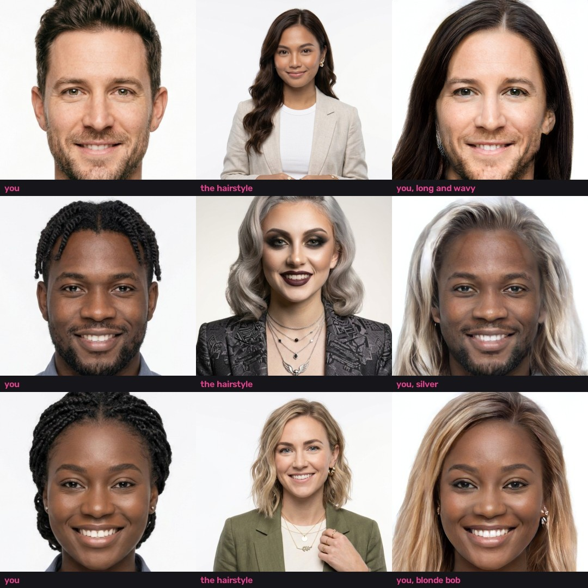
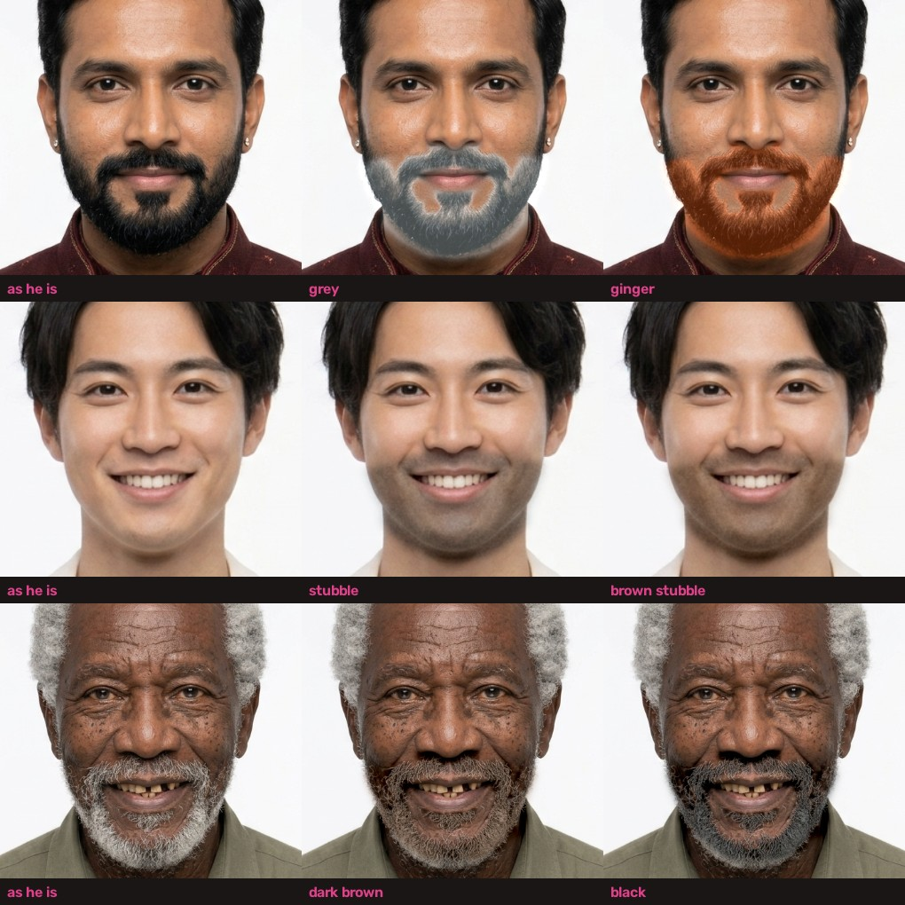
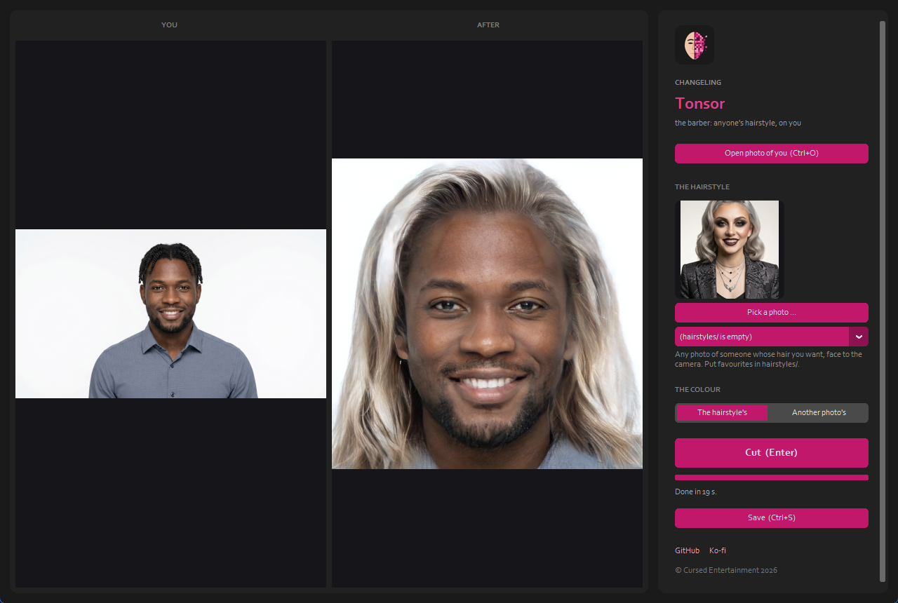

What it looks like
Each row: you, the hairstyle, and you with it. About 20 seconds each. Every face is an AI-generated person who doesn't exist. Click to enlarge.

The beard
Beard colour, stubble and a shave, on the new hairstyle or your photo as it is; and AI beards (a full beard, a goatee, a moustache, clean shaven) through AetherCanvas AI. Click to enlarge.

Use it
- Python 3.9 - 3.12 and an NVIDIA GPU (6 GB works).
- Start
run.bat(orrun.ps1,run.sh): it gets HairFastGAN and its models the first time. - Open photo of you, pick a hairstyle photo (and another for the colour if you like), press Cut.

Its limits
It knows the hair StyleGAN2 learned from FFHQ's photos: long, short, wavy, straight, bobs and colours work well; braids, beads and pigtails don't carry over. The result is the face frame. Use it on yourself, on generated people, or on people who agreed.